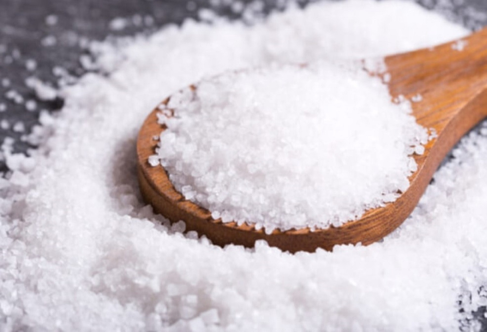

SANDWORM SAUCE
General Overview:
Trà Vinh, a region in the southern part of Vietnam, has long been famous for its delicious and unique specialties. However, if you have ever set foot in this place, you are sure to have heard about a special type of fish sauce from this region, which is known as sandworm sauce.
The town of Duyên Hai, in Trà Vinh province, is renowned for a unique aquatic creature -
Sandworms is a species of earthworm that lives underground in brackish and tidal areas, following rivers and coastal sandbanks. The unique characteristic of sandworms is that they only appear during the lunar months of October and November, resulting in the production of sandworm sauce happening only once a year. Pure sandworm sauce has a high protein content, creating a delicious and salty flavor that surpasses regular fish sauce. The process of making sandworm sauce is also simple, with a quantity of sand worms mixed with salt in a fixed ratio, then left to ferment outdoors. This makes the sandworm sauce progressively thicker and takes on a golden color like
While sandworm sauce is only produced once a year, the local residents hold it in high esteem, and it is served only for special guests. Every year, the sandworm sauce is carefully preserved and taken to various parts of the country as a symbol of pride for the land of Trà Vinh.
The town of Duyên Hai, in Trà Vinh province, is renowned for a unique aquatic creature -
the sandworm.

Sandworms is a species of earthworm that lives underground in brackish and tidal areas, following rivers and coastal sandbanks. The unique characteristic of sandworms is that they only appear during the lunar months of October and November, resulting in the production of sandworm sauce happening only once a year. Pure sandworm sauce has a high protein content, creating a delicious and salty flavor that surpasses regular fish sauce. The process of making sandworm sauce is also simple, with a quantity of sand worms mixed with salt in a fixed ratio, then left to ferment outdoors. This makes the sandworm sauce progressively thicker and takes on a golden color like
honey,

While sandworm sauce is only produced once a year, the local residents hold it in high esteem, and it is served only for special guests. Every year, the sandworm sauce is carefully preserved and taken to various parts of the country as a symbol of pride for the land of Trà Vinh.
The Way To Make Sandworm Sauce:
Ingredients:
1.
2.
Sandworms
2.
Salt 
The steps to follow:
We proceed to ferment fish sauce. We mix sandworms and salt in a ratio of 7:3 (for example, if we have 70kg of sandworms, we will use 30kg of salt). Then, we stir to dissolve the salt evenly. We wait for a while for the water to settle on top, skim off the foam, and then seal the barrel tightly. We ferment the fish sauce for 10 months. After about 10 months, we proceed to filter the sauce and transfer it into bottles. Nowadays, with advanced technology, we can sterilize it using UV rays, making the filtering process modern and more reliable.
Source: excerpt from the YouTube channel "TRUYỀN HÌNH TRÀ VINH"
Enjoy The Product:


Enjoying sand wormsauce is not just about eating; it's also about savoring and honoring the Trà Vinh region and its people. It's a way to connect with the history and culture of this coastal area and to show appreciation and respect for the hard work of those who make sandworm sauce. When you first place a piece of delicious, fresh fish or seafood onto a delicate rice paper, you'll experience the gentle, salty fragrance of anchovy fish sauce. This is the scent of the ocean, the smell of the sun, the aroma of white sands, and the waves of the sea. Each drop of sandworm sauce carries the breath of the sea, and as you savor it, you are truly immersing yourself in this unique seaside experience.
If you have the opportunity to savor sandworm sauce from Trà Vinh, relish every drop and every bite. Experience the taste of the sea and share the pride of a unique product that can only be found in this region.
If you have the opportunity to savor sandworm sauce from Trà Vinh, relish every drop and every bite. Experience the taste of the sea and share the pride of a unique product that can only be found in this region.
Prices: Ranges from 50,000 VND 100,000 VND per 500ml depending on the quality of the sandworms used.